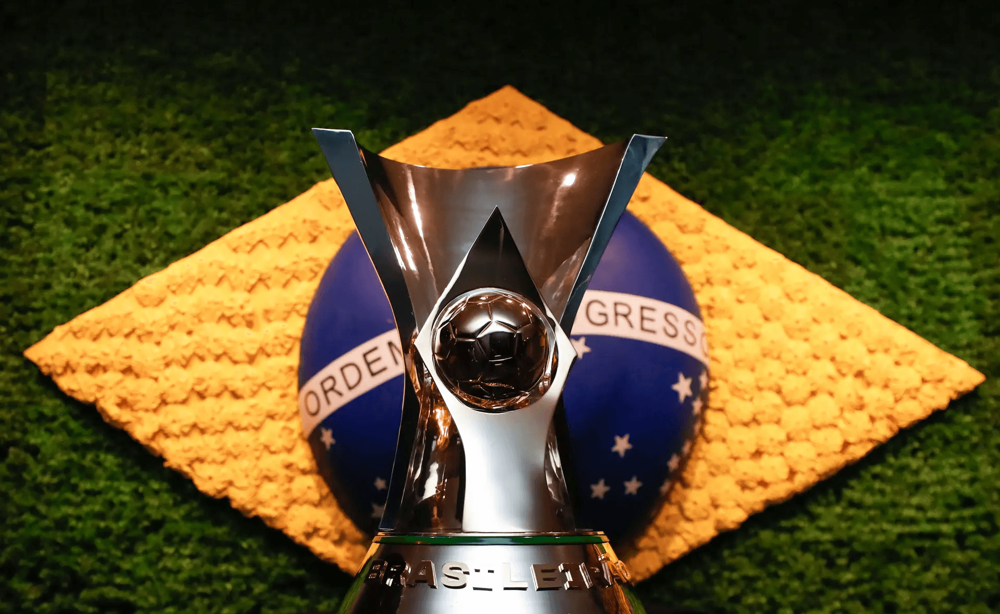

Brasileirão começa com grandes confrontos
O Campeonato Brasileiro Série A começa com grandes jogos logo nas primeiras rodadas. Entre os confrontos mais aguardados estão partidas entre alguns dos principais clubes do país, como São Paulo, Flamengo, Palmeiras e Atlético-MG.
A temporada promete uma disputa equilibrada pelo título e também pelas vagas nas competições continentais, como a Libertadores e a Copa Sul-Americana.